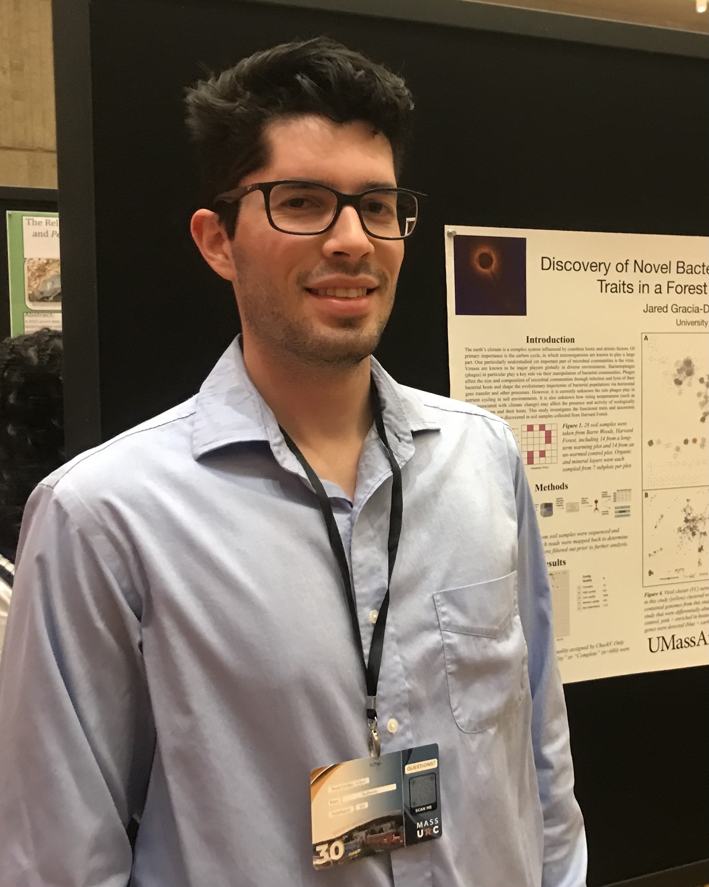
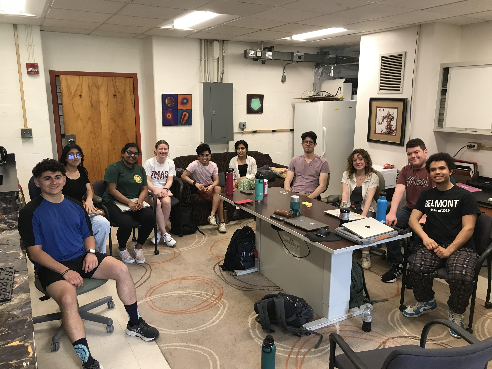

People in our research group
List of Current and Former People in Our Lab
2025
Holiday Party

End of the Spring semester presentations at Orchard Hill

Massachusetts Undergraduate Research Conference


PROPEL Research Fellows UMassGives
New England Biolab’s “Decoding the Biosphere: Advances in Environmental DNA and Metagenomics” Symposium
2024
Massachusetts Undergraduate Research Conference


Pioneer Valley Microbiology Symposium
2023

2022
2021
2020
2016

2015

2013

2012
2011

2009

2007

2006
2005

2004